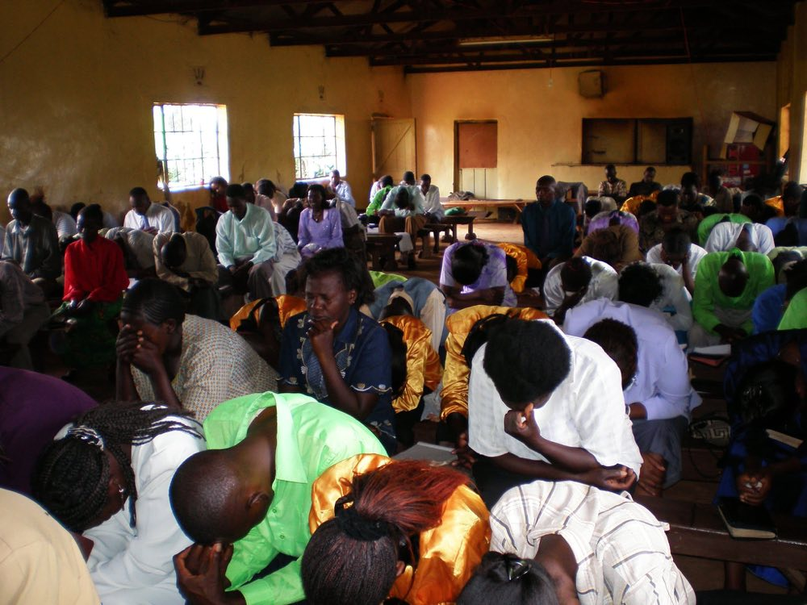

OBI teams gather pastors and their wives for days of sound Biblical preaching, spirited worship, warm fellowship—and good food, clean bedding, and soap and water.

2026
- JanuaryCambodia: two conferences for about 40 pastors each, on the theme “Refreshing Tired Feet” (Romans 10:15)
- AprilVietnam: two conferences for about 100 pastors each, with conferences for pastors’ wives
- SeptemberTanzania: five leaders trained to conduct OBI conferences in their own country
- OctoberIndia: a conference for 50 pastors
- Also this yearIndia and Honduras
2025
- JanuaryMyanmar
- FebruaryIndonesia
- March–AprilBangladesh
- August–SeptemberKenya
- OctoberSouth Korea: a Spiritual Life Conference for 40 Nepali and Filipino university students and young adults
- OctoberPhilippines: a retreat for 50 pastors and wives, followed by an OBI conference for 126 pastors and wives
- OctoberPeru: a conference for 75 pastors, postponed for security reasons and to be rescheduled in a safer location
- Also this yearHonduras
2023
- SummerKenya: a conference for 100 pastors from 21 different church backgrounds
- SummerTogo: a conference for pastors
- AugustNepal: two conferences
- AugustHonduras: a two-day conference for 45 pastors, alongside a medical outreach
National OBI teams
- KenyaTrained in 2019, the Kenyan team conducts three to four conferences a year.
- TanzaniaTrained in September 2026, the Tanzanian team held its first conference in October for more than 50 leaders.
Interested in joining a ministry team? Get in touch →